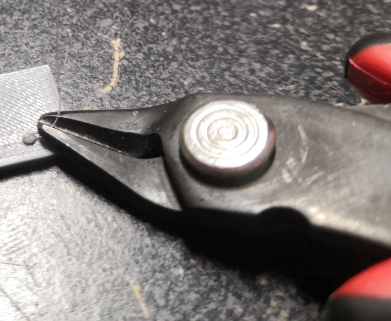
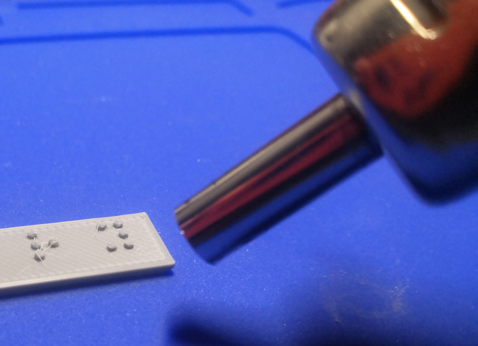
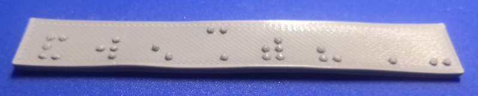

Post Processing (Optional)
Before relying on these methods to finish braille signs, be sure that your filament free of excess moisture, and experiment with your 3D printer's settings including the following to try to reduce or remove stringing.
- Nozzle temperature
- Retraction distance
- Retraction lift
- Axis movement speed
String removal can greatly increase the time it takes to produce a sign, and can lead to deformation of dots. It is worth spending some time to try to dial in your 3D printer settings to avoid stringing.
Tools
- 1 flush cutters (Optional)
- 1 heat gun (Optional)
Step 1: Clipping Strings
- Initial cleanup of strings can be done with a pair of flush cutters or side cuts.
- Take care not to deform or cut off the dots during this process.

- A fine triangle file can also work for removing larger excess deposits of plastic, but can easily damage dots as well.
Step 2: Heat Gun Method
- A heat gun can be carefully used to remove the minor occurrences of stringing that occur when printing the dots (example guide here).
- Never hold the part being de-stringed in your hand while applying heat.
- Never put the part being de-stringed on a flammable surface while applying heat.
- Follow all safety instructions supplied by the manufacturer of your heat gun.

- Start with the heat gun away from the part and move it inwards slowly.
- Do not dwell in one area for too long.
- It is easy to put too much heat into the base plate and causing warping, or to melt and deform the dots. This method requires practice to be able to do it well.
